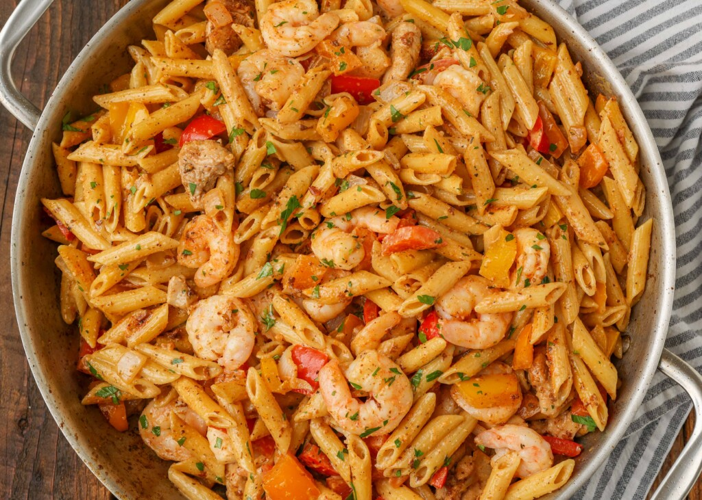
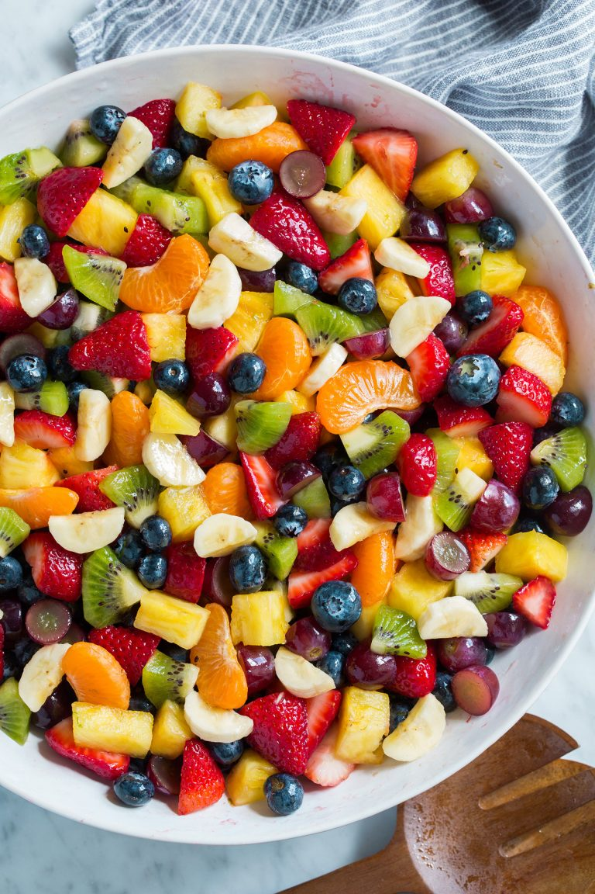

Pasta
I love pasta because it's versatile and can be prepared in so many different ways, from creamy Alfredo to spicy shrimp and chicken.
Sushi

Sushi is one of my favorite meals because it's delicious and also an art form, with each piece carefully crafted.
Fruit Salad
Fruit salad offers a delightful burst of flavors and textures, and creates a refreshing and satisfying experience. It is also packed with essential vitamins and nutrients, making it a healthy snack option.